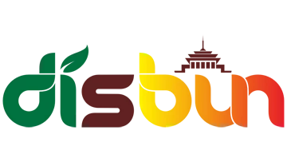
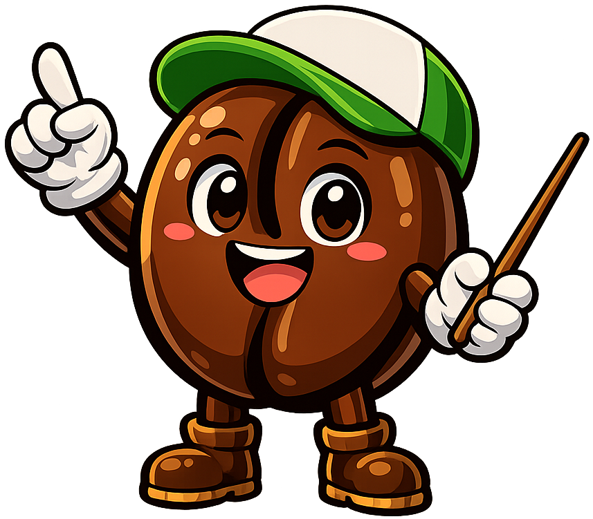

Pemerintah Provinsi Jawa Barat
Dinas Perkebunan
Provinsi Jawa Barat
Arabika
Coffea arabica
Ketinggian
-
Suhu Ideal
-
Kadar Kafein
-
Rasa
-
Lahan
-
KopiLand
Media pembelajaran budidaya kopi interaktif
Arabika · Robusta · Liberika
Arabika · Robusta · Liberika
v1.0.0 · Edukasi Perkebunan
Perkenalan
Halo, Petani Kopi! 👋
Selamat datang di KopiLand! Aku akan menemanimu belajar membudidaya kopi. Yuk, kenalan dulu dengan 3 jenis kopi yang akan kita tanam!

K U I S
‹
📝 Kuis Budidaya Kopi
Uji pemahaman materi
0 / 10
A
Luar Biasa!
10 dari 10 soal benar
0
Benar
0
Salah
0%
Skor
📋 Review Jawaban
☕0
Musim Hujan 🌧
📅Hari 1
⛈ Hujan Lebat×1.4 tumbuh
Info
Halo!
Pilih Aksi
✕ Tutup
Arabika
Coffea arabica
🌱 Syarat Tumbuh
Ketinggian-
Suhu-
Curah Hujan-
pH Tanah-
Bahan Organik-
🫘 Karakteristik Biji
Bentuk Biji-
Alur Tengah-
Warna Biji-
Ukuran Biji-
Ukuran Buah-
Kafein-
Rasa-
Aroma-
Kadar Gula-
Kadar Lemak-
Kadar Asam-
Harga-
Ketahanan-
Keistimewaan-
🌳 Budidaya
Penaung-
Varietas-
💡 Tips Budidaya
-
⚙️ Pengaturan
Musik Latar
Ambient background music
🔈
40
Efek Suara
Suara aksi & interaksi
🔈
70
Langkah 1 / 7
Selamat Datang!
Ini adalah KopiLand!
🫘
Arabika
ℹ️
☕
Robusta
ℹ️
🌿
Liberika
ℹ️
🌱 Lahan: Dataran Tinggi